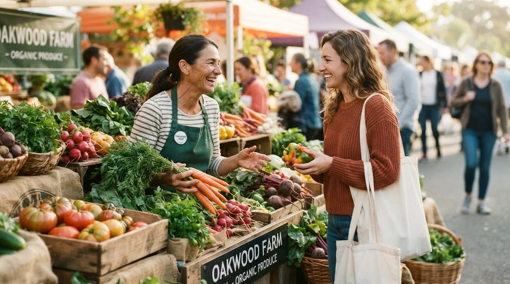
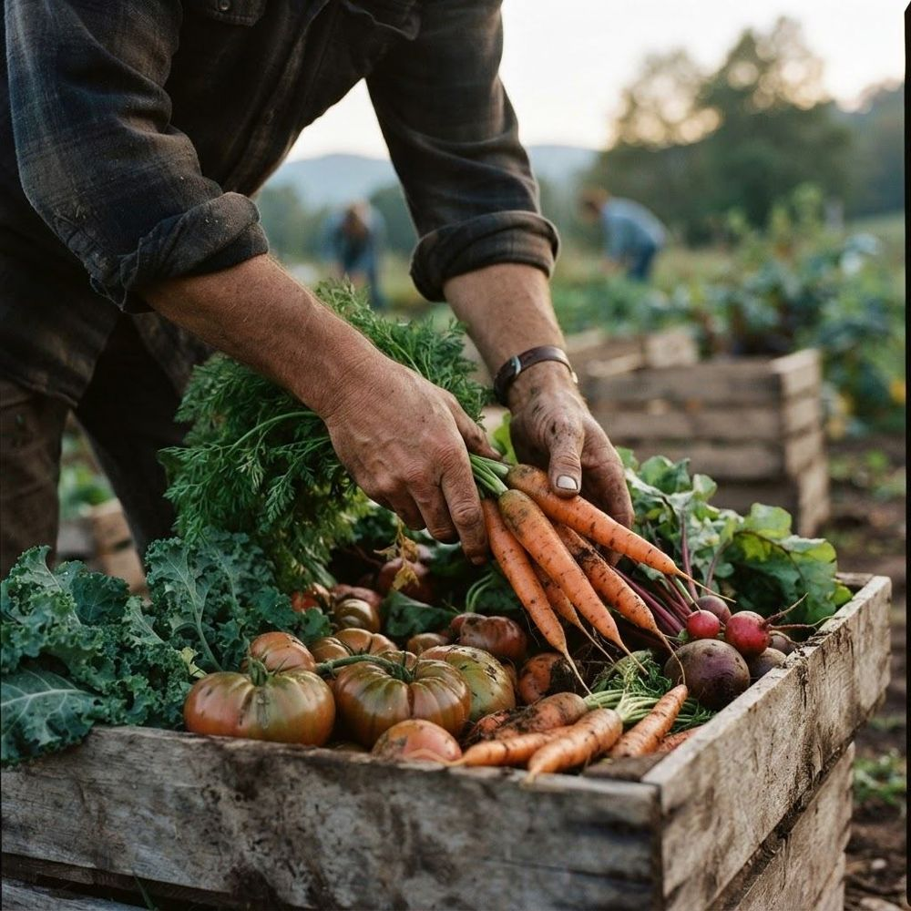
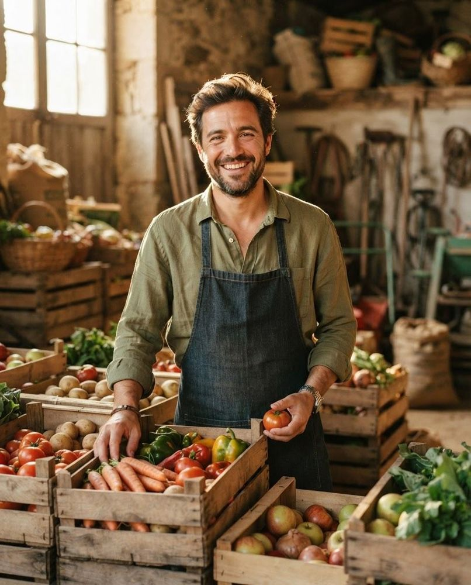

Our mission
Make local freshness easier to find
Connect more people with trustworthy markets, confident produce knowledge, and food that reflects the rhythm of each season.
We help people find better produce, discover trusted local markets, and understand the seasonal food growing all around them.


Where can I find the freshest food near me — and who grew it? FreshFind began as a handwritten map shared among neighbours. It has grown into a thoughtful guide to Karachi's markets, seasonal produce, and the people behind every harvest.
We believe fresh food should feel discoverable, not intimidating. So we pair practical information with beautiful storytelling: clear market hours, honest seasonal guidance, nutrition knowledge, and the small details that make a place worth visiting.
Connect more people with trustworthy markets, confident produce knowledge, and food that reflects the rhythm of each season.
A future where local growers are visible, neighbourhood markets are vibrant, and fresh choices feel accessible to every household.
We bring together useful local information and genuine food knowledge in one calm, beautiful experience.
Every featured market is reviewed for quality, transparency, and community value.
Our guides show what is genuinely at its best now — and what is coming next.
Meet the people, practices, and places behind your food.
Clear hours, directions, parking and transit details help everyone plan with confidence.
Nutrition, storage, and preparation guidance turn good intentions into everyday habits.
Local voices and lived experience keep every recommendation grounded.
Researchers, storytellers, food lovers, and market regulars building a better way to find fresh.
Based wherever the morning markets begin early.

Explore seasonal produce, trusted growers, and vibrant local markets.